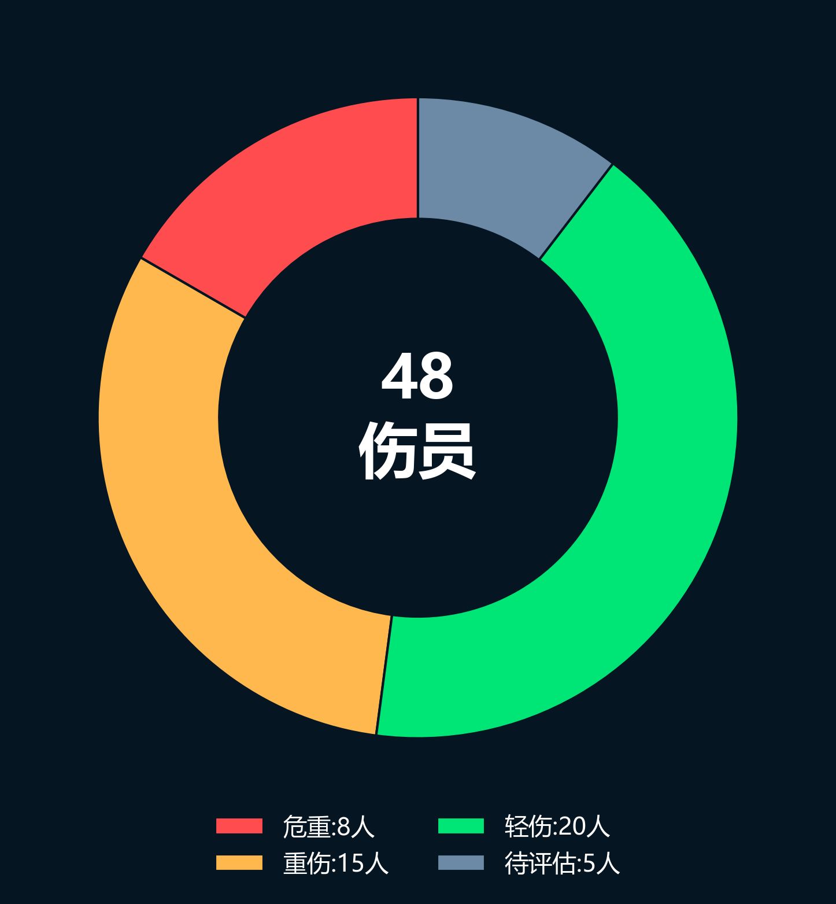
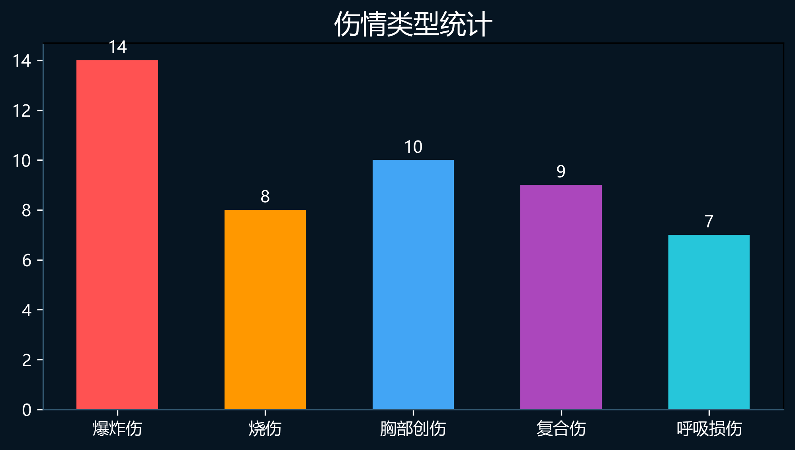
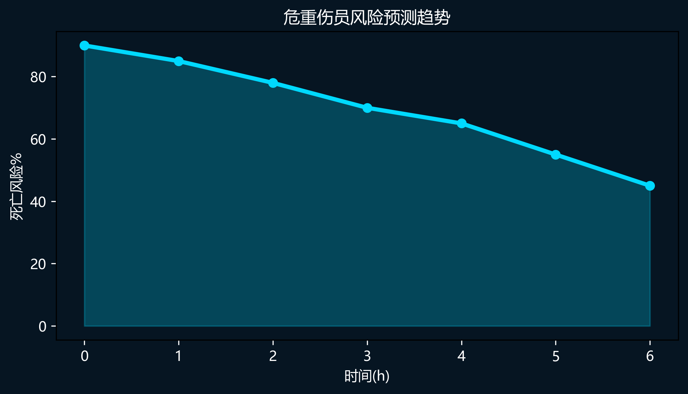
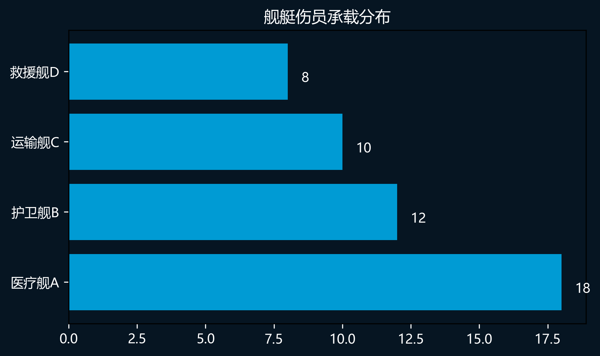
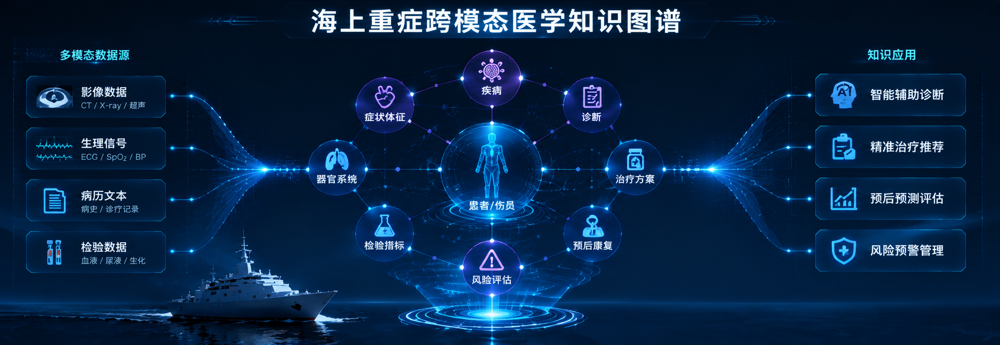

🌊 海域医疗态势
🚢 医疗舰A
🚢 战斗舰B
🚢 支援舰C
⚠
🩸 全域伤员态势
8
危重伤员
15
重伤员
20
轻伤员
5
待评估
📊 全域伤员统计分析




🤖 医学专家大模型
👨⚕️ 医生： 舰艇爆炸事故， 患者血压70/40， SpO₂ 85%，如何处置？
🤖 医学专家模型：
正在检索：
✔ 海上创伤数据库
✔ ELSO ECMO指南
✔ 爆炸伤救治知识图谱
综合判断：
① 失血性休克Ⅰ级危重
② 启动快速输血复苏
③ 进行动态氧合监测
④ ECMO团队待命
🔎 GraphRAG知识检索
爆炸伤 → 失血 → 休克
肺损伤 → ARDS → ECMO
海上转运 → 生命支持规范
📋 实时伤员监测
| 编号 | 伤情 | 生命指标 | AI判断 |
|---|---|---|---|
| 001 | 爆炸伤 | BP 70/40 SpO₂85% | 休克风险90% |
| 002 | 胸部创伤 | SpO₂92% | 肺损伤风险 |
🕸 海上重症跨模态医学知识图谱

🧠 AI辅助决策推理链
输入数据
生命体征
影像
病历
知识检索
医学KG
ELSO指南
病例库
模型推理
Qwen3-14B
GraphRAG
Agent
输出方案
治疗建议
转运策略
风险预测
🚢 多舰艇医疗协同数据库
| 舰艇 | 位置 | 医疗能力 | 状态 |
|---|---|---|---|
| 医疗舰001 | 东部海域 | ICU ECMO手术室 | 在线 |
| 护卫舰023 | 任务区域A | 急救单元 | 在线 |
| 运输舰006 | 待命区域 | 伤员转运 | 待命 |
📊 智能医疗数据中心
12
舰艇接入348
历史病例95%
AI预测准确率24ms
响应延迟⚙ 系统运行状态
✔ 多舰艇数据同步正常
✔ 医学知识库更新完成
✔ GraphRAG检索服务运行中
✔ 医学专家大模型在线